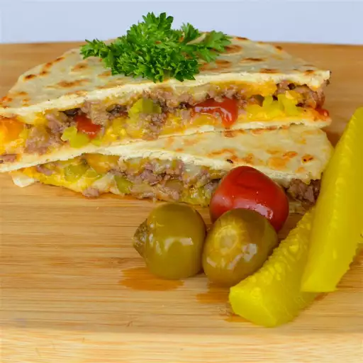

Cheeseburger Quesadilla

Description
This cheeseburger quesadilla was inspired by one of my favorite burritos from Burrito-Ville, a local joint down
by Southeast Missouri State University. Burrito-Ville specializes in some of the oddest burritos I've ever
tasted. From the BBQ chicken burrito to the Buffalo burrito, I've had them all — but they've got only one type
of quesadilla. So I decided to take one of my favorite burritos from there, the cheeseburger burrito, and apply
it to quesadilla form. Served with a side of fries and a Coke, I call this my most recent culinary triumph.
Serve with extra ketchup, mustard, and relish.
Ingredients
- 1 teaspoon butter
- ½ small yellow onion, chopped
- 2 pounds ground beef
- 1 tablespoon Worcestershire sauce
- 1 teaspoon salt
- 1 teaspoon ground black pepper
- ½ teaspoon garlic powder
- cooking spray
- 8 (8 inch) flour tortillas
- 2 cups shredded Colby cheese
- 4 teaspoons ketchup, or to taste
- 4 teaspoons yellow mustard, or to taste
- 4 teaspoons sweet relish, or to taste
Steps
-
Melt butter in a saucepan over medium heat. Cook and stir onion in melted butter until slightly tender,
about 5 minutes. Add ground beef, Worcestershire sauce, salt, pepper, and garlic powder; cook and stir until
beef is browned and crumbly, about 10 minutes. Remove from the heat, drain liquid from beef, and let sit for
2 minutes.
-
Meanwhile, heat a griddle or flat pan over medium heat and spray with cooking spray.
-
Place 1 tortilla on the hot griddle, top with some of the Colby cheese, 1/4 of the beef mixture, 1 teaspoon
ketchup, 1 teaspoon mustard, and 1 teaspoon relish. Top with more Colby cheese and 1 tortilla. Flatten the
quesadilla with your hand.
-
Flip quesadilla with a spatula and cook until browned and cheese is melted, 3 to 5 minutes more. Cut
quesadilla into 4 pieces. Repeat with remaining tortillas, ground beef, cheese, ketchup, mustard, and
relish.